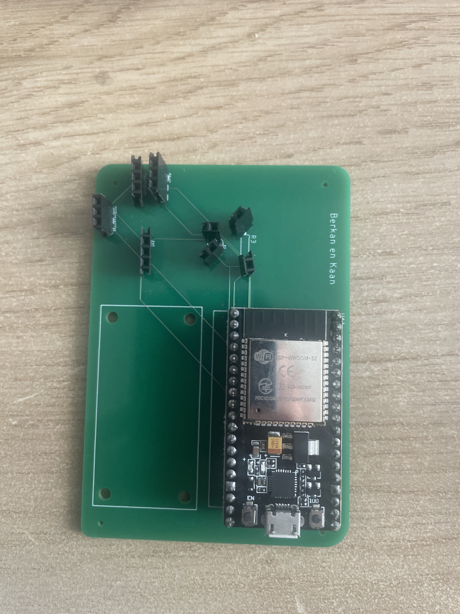
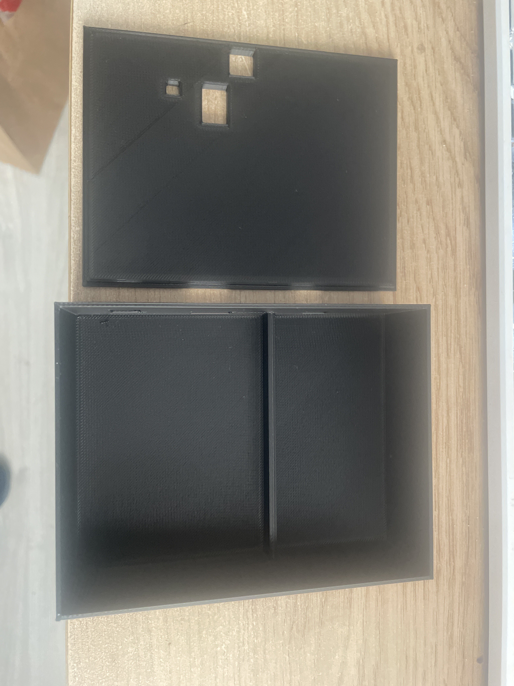
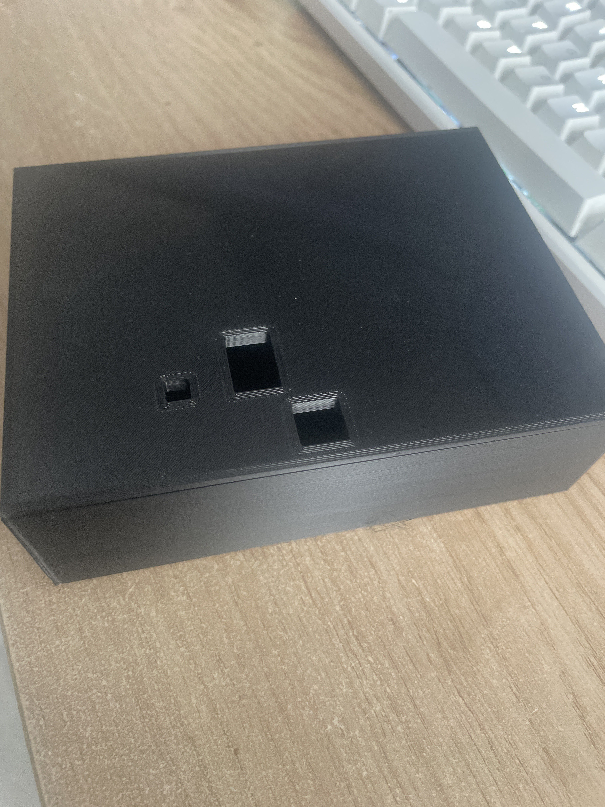

Bij Smart Technology hebben we gewerkt aan de ontwikkeling van een plant-bewateringssysteem met diverse functionaliteiten, waaronder het voorzien van water, het activeren van een lampje, en het meten van de vochtigheidsgraad en temperatuur van de plant. Deze uitdaging was voor mij uniek, aangezien ik geen eerdere ervaring had met deze materie.
Om grip te krijgen op de programmeeraspecten begonnen we met lessen over programmeren, waarbij we de ESP32 programmeerden met verschillende codes, gebruikmakend van het programma VS Code. Ik had zelf al programmeer ervaring, maar niet met Arduino. In dit proces heb ik Tom benaderd, die al wat meer ervaring had met 3D-modelleren in SolidWorks, om me te ondersteunen.
Het volgende onderdeel omvatte het ontwerpen van een PCB, waarop de ESP32 en alle sensoren werden geplaatst en met elkaar werden verbonden. Het geprinte printplaatje werd werkelijkheid dankzij een bestelling bij een fabrikant, gevolgd door een soldeerworkshop op de HAN in Arnhem. De onderstaande figuur toont trots mijn gesoldeerde PCB.
Figuur: Mijn gesoldeerde PCB
Het derde onderdeel van de Smart Technology workshops draaide om 3D-printen. Hierbij was het doel om een behuizing te ontwerpen waarin de hardware en sensoren zouden passen. Voor dit specifieke aspect heb ik met Tom samengewerkt, die zijn ervaring in 3D-modelleren deelde en me hielp met het ontwerp. Het resultaat van ons werk is te bewonderen in de volgende figuur.
Figuur: Het eindresultaat van mijn behuizing
 Uiteindelijk werden alle componenten samengevoegd en was het plant-bewateringssysteem klaar voor gebruik.
Als vereiste voor de minor heb ik een video opgenomen waarin het functioneren van het plant-bewateringssysteem gedemonstreerd wordt. Deze video is te bekijken via de volgende link:
Neem contact met ons op via b.akdeniz@student.han.nl